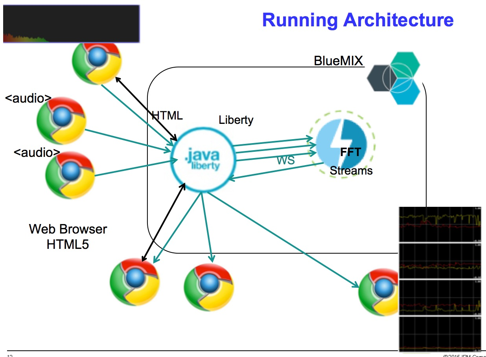

Audio data to Streams and Back.
Some rough cut demo to collect/display audio data.
Notes regarding demo.
- This works on FireFox, I have had difficulties with Chrome and Safari.
- You must have a very good data line to get to Streams on BlueMix. This wants to push 44k samples per second .
- You can have multiple connection transmitting, using the 'Record Audio' page.
- The 'Record Audio' page transmits data only after you toggle the 'Transmit to Streams' box, you know it's sending when the background turns red.
- This works nicely with two displays.
Record Audio
Record Audio Stream, stream to Streams. This attaches to the browsers microphone.
If multiple laptops connect, you'll see them in the monitor page below.
Monitor Audio
Monitor the Audio that has been processed on streams. Multiple Streams are monitored from here.
Tone Generator
Use this to generate a 7040Khz done, this will cause data to appear in lowest output box.
Raw Audio
Audio at 1/2 speed. This only works if you read the code (VERY DANGEROUS)
Notes:

The flow of data.
- Record Audio opens microphone on laptop, collect audio data at 44kHz.(Record Audio)
- Pack up the audio data, send to Liberty using WebSockets
- Forward Messages onto Streams WebSocket source operator
- Streams packets the audio into tuples of 4096 samples.
- 4096 samples are decomposed into single samples tuples.
- 4096 tuples windowed and processed by FFT operator.
- FFT magnitude output and broken into 10 chunks
- Magnitude converted to percentage, drop the upper 6 chunks.
- Transmit the 4 lowest chunks to Liberty using WebSocket sink.
- Liberty forwards onto waiting monitor page
- Monitor Audio renders the 4 chunks to 4 graphs.
This application sends message through a proxy to Streams. Due to security provided by
BlueMix we cannot make a direct connection to Streams, thus the proxy.
This proxy forwards data from the public internet to Streams which is residing in
the protected lair of BlueMix.